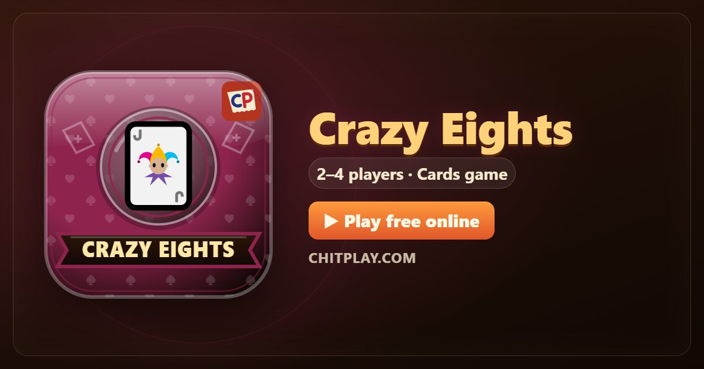

Crazy Eights: play free online and learn the rules
- 👥 2–4 players
- ⏱ 10–15 minutes
- 👤 guest play
- 🌍 online opponents
- 🤖 computer players
- 📶 friends nearby
- 🆓 free, no sign-up
Crazy Eights is a traditional shedding game for a standard pack of cards: get rid of all your cards before anyone else. It's quick to learn, and the eights give you just enough power to change the game at the right moment.

Ways to play Crazy Eights
- 👤 Guest play Start straight away against computer players, no account and no sign-up. Choose 2 to 4 players.
- 🌍 Play online Get matched with real players from around the world. If nobody is free within a few seconds, computer players take the empty seats so you are never left waiting.
- 📶 Friends nearby Open a room, and friends join from their own phones with a 6-digit code or by scanning a QR code. Works on the same Wi-Fi or across the internet.
- 📱 One phone Pass one phone around the table; secrets stay hidden until it is your turn.
- 👀 Watch Let the computer players show you how the game goes before you jump in.
How to play
- Each player gets seven cards with two players, five with more. One card starts the pile.
- On your turn play a card that matches the top card by suit or by rank.
- An eight can be played on anything, and you name the suit that must follow.
- With nothing to play, draw a card. Play it if you can; if not, pass.
- The round ends when someone has no cards left.
Scoring
Cards left in your hand count against you: an eight is 50, a king, queen or jack is 10, an ace is 1, and any other card is its number.
Who wins
After three rounds, the player with the lowest penalty total wins.
Tips
- Save your eights for when you have no other card to play.
- Play high cards first: if someone else finishes, they cost you less.
- When you name a suit, name the one you hold most of.
Questions
What does an eight do?
It can be played on any card, and the player who plays it chooses the next suit.
What if the draw pile runs out?
The played cards, except the top one, are shuffled to make a new pile.
More games
Points in this game have no value. ChitPlay involves no real money, betting or prizes.